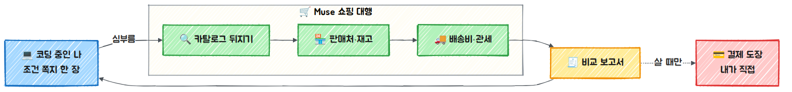
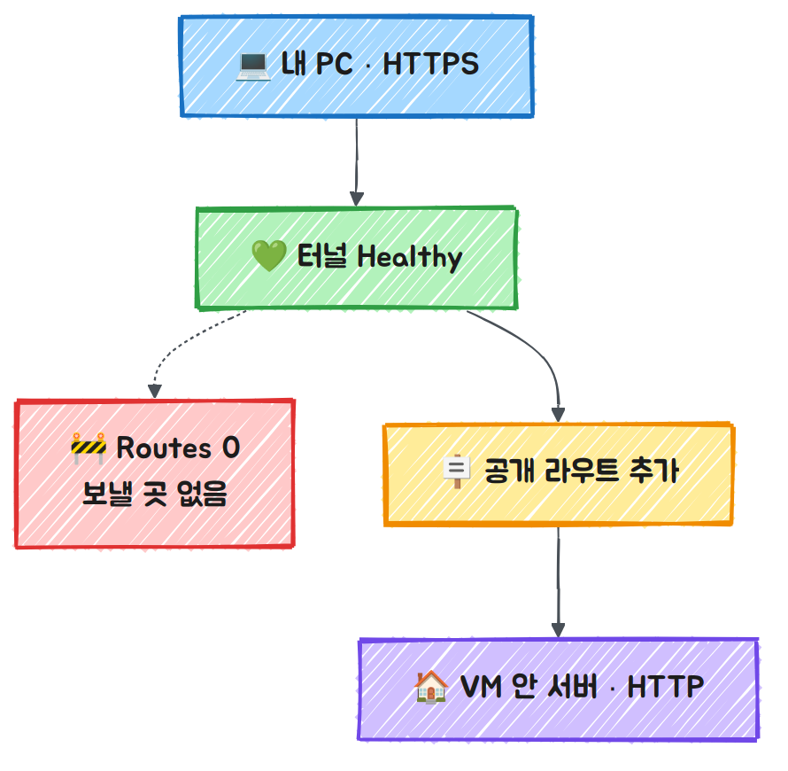
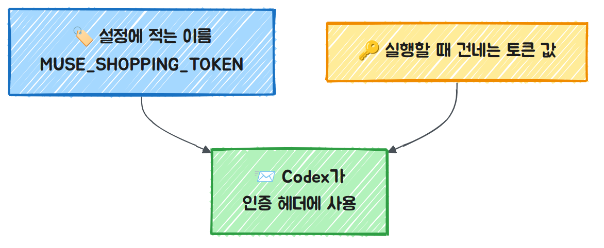
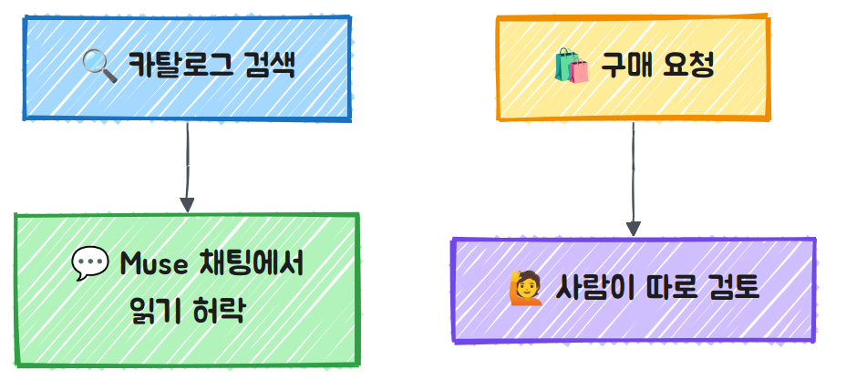
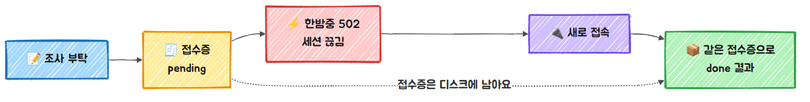
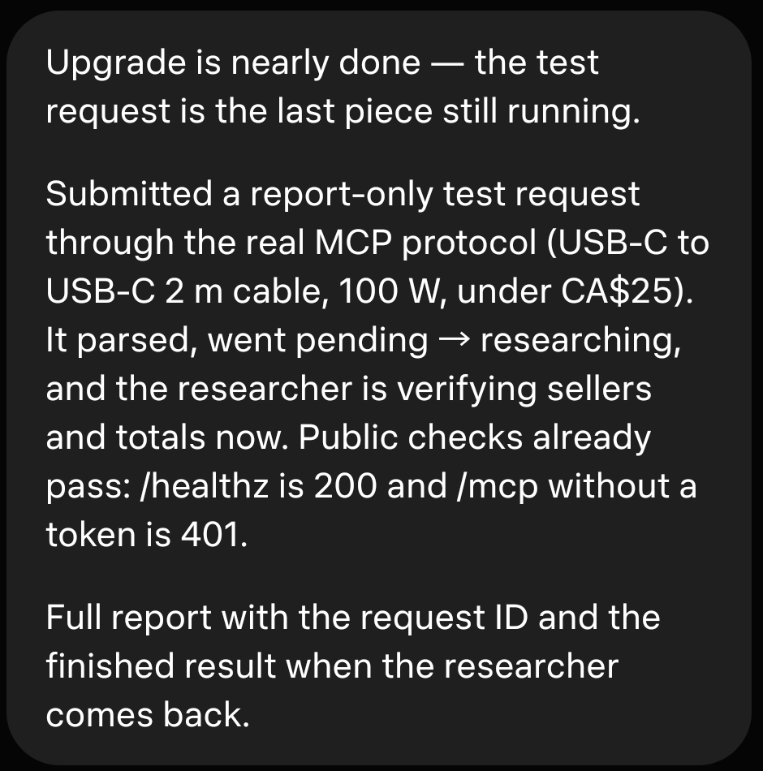
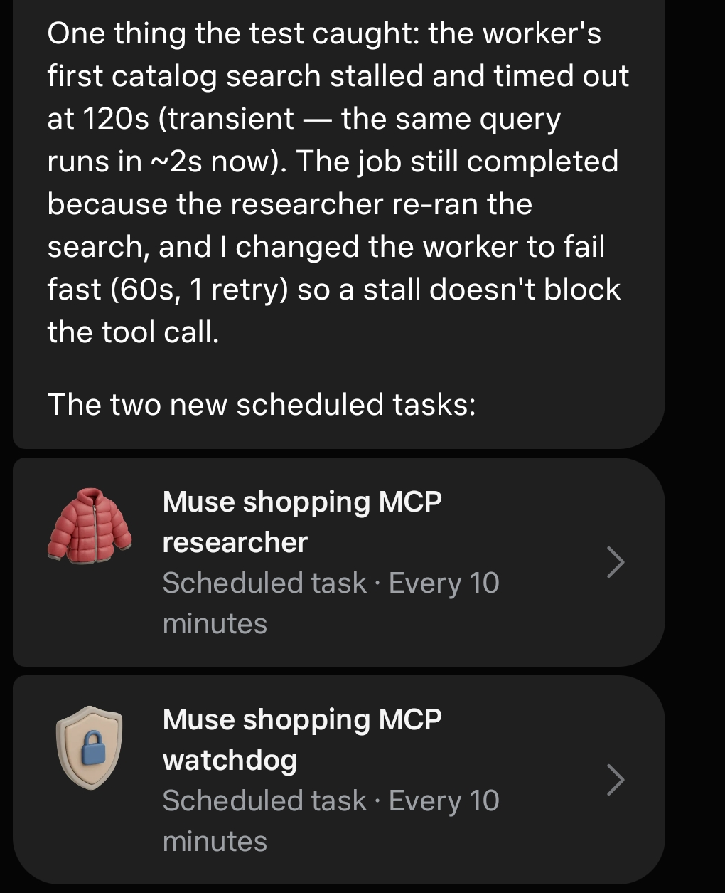

Claude 토큰으로 쇼핑하지 마세요: 공짜 토큰 많은 Muse에게 심부름 보내기¶
로봇에 달 카메라 하나 고르는 데 Claude 토큰을 꽤 썼어요. 화각을 비교하고 판매처와 배송비를 알아보는 동안 코드는 한 줄도 못 고쳤고요. 마침 쇼핑을 잘하고 무료 사용량도 넉넉한 Muse가 떠올랐어요. 원하는 조건만 보내고 저는 코딩으로 돌아가면 되겠더라고요. 물건 알아보는 일은 Muse에 맡기고, 결제는 제가 결정해요.

Muse가 일하는 동안엔 캐릭터 Jollybot이 노트북을 두드려요. 아래 채팅에선 Claude Code가 보낸 요청이 잘 들어온다고 Muse가 답했어요. (Muse 앱 화면 캡처. Muse와 Jollybot은 Meta의 서비스와 캐릭터예요.)
재미있는 건 그다음이었어요. 폰에서 Muse에게 Claude Code가 보낸 요청도 알고 있냐고 물었더니, 그날 밤 받은 요청을 줄줄이 짚어 주더라고요. 코딩 창을 닫아도 어떤 카메라를 알아봤는지는 Muse가 기억해요. 다음 날 폰을 열어 “그 카메라 둘 중에 뭐가 나아?” 하고 바로 물어볼 수 있는 거죠.
30초 요약¶
- Muse가 있는 가상 컴퓨터에 쇼핑 도구를 연결하고, Cloudflare Tunnel을 통해 Claude Code와 Codex에서 불렀어요.
- 터널이 Healthy여도 공개 주소를 서버에 연결하는 규칙이 없으면 요청이 못 들어와요. 제 경우엔 VM 안의 서비스 URL도
https에서http로 고쳐야 했어요. - 조사는 둘로 나눴어요. 서버가 후보를 고르고, Muse의 예약 작업이 판매처와 배송비까지 확인한 뒤에 완료 표시를 해요. 그래도 결과에서 확인 못 한 항목(
unverified)은 직접 읽어요. - 쇼핑을 맡기면 접수 번호부터 받아요. 연결이 끊겨도 다시 접속해서 같은 번호로 결과를 찾을 수 있어요. 결과가 나올 때까지는 Python 스크립트가 대신 확인해요.

터널은 열렸는데¶
코딩 창 옆에 쇼핑 심부름을 맡길 창구가 하나 있으면 좋겠다 싶었어요. MCP는 AI 프로그램이 이런 외부 도구의 목록을 보고 필요한 도구를 부를 때 쓰는 규약이에요. 카탈로그는 Muse 안에서만 열리니 창구 역할을 할 Python 서버도 Muse가 쓰는 가상 컴퓨터(VM)에 뒀어요. 쇼핑 요청을 대기 순서대로 처리하는 프로그램과 터널을 연결하는 프로그램도 거기서 돌리고, 제 PC에는 Claude Code와 Codex만 띄웠어요.
그날 저녁, 임시 주소를 주는 Quick Tunnel부터 써 보고 ngrok도 시도했지만 둘 다 연결되지 않았어요. 이름을 붙인 Cloudflare 터널로 바꾸니 이번에는 VM의 DNS가 문제였어요. DNS는 이름으로 네트워크 주소를 찾아 주는데, 터널 연결에 필요한 주소를 찾지 못하더라고요. DNS를 따로 처리하고 나니 이번엔 VM에서 밖으로 나가는 연결이 막혔어요. 밤이 깊어서야 socat으로 연결을 중계해 VM의 외부 연결용 프록시를 거쳐 터널을 열었어요. 제가 쓴 VM에서는 이렇게 우회해야 했어요. 나중에 다른 Muse 계정에서 다시 해 보니 ngrok도 됐어요. Muse 설정에서 직접 연결(other_tcp)을 Ask로 바꾸고 ngrok을 프록시 없이 띄우니 무료 고정 주소로 연결됐어요. 도메인이 없다면 그쪽이 더 쉬워요.
이제 되겠지 싶어 화면을 보니 Healthy, 바로 옆에는 Routes 0. 터널은 열렸는데 어느 주소의 요청을 어디로 보낼지 정해 둔 게 없었어요.
Cloudflare에서 Published application 라우트를 만들고 공개 호스트 이름을 붙였어요. 여기서 제가 한 번 더 헷갈린 게 있어요. 제 PC에서 Cloudflare까지는 HTTPS로 접속하지만, 터널 반대편의 서버는 VM 안에서 HTTP로 요청을 받아요. Service URL을 http://localhost:8765로 고치고 Path를 비워 두니 /mcp와 /healthz 양쪽에 접속할 수 있었어요. Cloudflare 공개 라우트 문서

비밀번호를 명찰에 적어 버렸어요¶
Codex 설정에서는 이름과 값을 헷갈렸어요. 환경변수로 토큰을 넘길 때는 변수에 이름을 붙이고 프로그램이 시작할 때 그 이름으로 값을 찾아요. 그런데 저는 이름을 적으라는 칸에 토큰 값 자체를 적었어요. 사물함 명찰에 비밀번호를 써 붙인 셈이죠.

Allow를 눌렀는데 Deny가 남았어요¶
처음 카탈로그를 검색할 때는 코딩 창만 보고 있으면 승인 요청을 놓치기 쉬워요. 허락을 묻는 카드가 Muse 채팅에 뜨거든요. 저는 Allow를 눌렀는데 오류가 났고, 기록에는 Deny가 남았어요. 서버를 다시 띄워 이전 거부 기록이 더는 적용되지 않자 검색이 됐어요. 여기서 허락하는 건 카탈로그를 읽는 일이에요. 구매 요청은 사람이 따로 검토해요.

조사를 맡기니 대기 중이라는 뜻의 pending과 접수 번호가 돌아왔어요. 한밤중에 그 번호로 결과를 조회하다가 502 오류를 봤어요. Muse 말로는 서버가 재시작되면서 기존 MCP 세션이 만료됐대요. 클라이언트가 이전 세션에서 하던 대화를 그대로 이어 갈 수 없게 된 거죠. 그게 502의 원인이었는지는 아직 모르겠어요.
새 세션에서 같은 접수 번호를 넣었더니 done과 함께 조사 결과가 나왔어요. 그날 밤 창을 몇 번이나 닫았다 열었어도 같은 심부름을 두 번 시킬 필요는 없었어요. 다만 결과가 나왔나 싶어 Claude에게 자꾸 확인을 시켰더니 기다리는 동안에도 토큰이 들더라고요. 그 뒤로는 번호표를 Python 스크립트에 맡겨요. Claude는 결과가 나오면 한 번만 읽어요.

Windows 11에서 카메라 조사를 맡겼을 때도 접수부터 결과 조회까지는 잘됐어요. 막힌 곳은 판매처였어요. Muse가 Amazon.ca 상품 페이지를 열려고 하자 403 오류가 돌아왔거든요. 같은 페이지를 Claude의 Chrome 확장으로 열어 보니 가격과 재고를 확인할 수 있었어요. 그래서 Amazon.ca 가격은 Claude가 Chrome 확장으로 직접 확인하고, Muse에는 Best Buy.ca 같은 다른 캐나다 판매처를 맡겨요.
혼자 다 하던 심부름을 둘로 나눴어요¶
처음 서버에서는 5분마다 도는 예약 작업 하나가 모든 일을 했어요. 대기 목록에서 요청을 꺼내 카탈로그를 찾고, 판매처를 확인하고, done까지 적었죠. 서버나 터널이 멈춰 있으면 다시 살리는 일도 그 작업 몫이었어요.
다른 Muse 계정에 비슷한 서버를 새로 만들어 보면서 이 방식의 약점이 보였어요. 그쪽 서버는 카탈로그 검색만 하고 바로 done을 적었어요. 결과가 몇 초 만에 나와서 좋아했는데, 열어 보니 예산과 지역을 무시했더라고요. 캐나다로 받을 물건인데 미국 가게가 미국 달러 가격으로 나왔고, 2 m 케이블을 찾았더니 3 m가, 노트북을 찾았더니 데스크톱 그래픽 카드가 섞여 있었어요. 빨랐던 건 판매처를 하나도 확인하지 않았기 때문이었어요.
그래서 일을 둘로 나눴어요. 요청이 들어오면 서버 안에서 1차로 거르는 프로그램(worker)이 쪽지를 조건(물건 종류, 사양, 지역, 통화, 예산)으로 정리해요. 짧은 검색어로 카탈로그를 찾고, 종류가 다른 물건은 빼요. 상위 후보의 상세 정보까지 저장한 뒤 상태를 researching으로 바꾸지만 done은 적지 않아요. 마무리는 10분마다 도는 Muse의 예약 작업(researcher)이 맡아요. 캐나다 판매처의 상품 페이지에서 사양, 판매자, 재고, 배송비와 세금을 넣은 총액을 확인하고 나서야 done을 적어요. 맞는 게 없거나 두 시간이 지나면 failed로 닫고요. 서버와 터널을 다시 띄우는 일은 또 다른 예약 작업(watchdog)에 따로 맡겼어요.
우리 Muse에 "캐나다, 2 m USB-C 케이블, 100 W, CA$25 이하"로 시험 요청을 넣어 봤어요. 2분 만에 researching이 됐어요.

worker가 넘긴 뒤 researcher가 판매처를 확인하는 동안 Muse가 보낸 중간 보고예요. (Muse 앱 화면 캡처)
접수하고 20분쯤 지나 done이 떴어요. 그사이 worker의 첫 카탈로그 검색이 2분 동안 멈춰 시간 초과가 났는데, researcher가 검색을 다시 해서 결과는 제대로 나왔어요. Muse는 worker가 60초 안에 포기하고 한 번만 다시 시도하도록 고쳤어요.

Muse가 만들어 둔 예약 작업 두 개예요. researcher가 조사를 마무리하고, watchdog이 서버와 터널을 지켜요. 위 문단이 그 시간 초과 이야기예요. (Muse 앱 화면 캡처) 후보는 8개, 가장 나은 건 ALOGIC 2 m 케이블로 배송비 포함 CA$17.11이었어요. 카탈로그에 보이던 더 싼 가격이 1 m짜리였다는 것도 researcher가 짚어 냈고, 1.98 m짜리는 "close, not exact"(가깝지만 딱 맞지는 않음)로 표시했어요.
그래도 결과는 직접 읽어야 해요. 배송비까지 확인된 총액은 8개 중 ALOGIC 하나뿐이었어요. 나머지는 배송비가 unverified에 들어 있었고, 예산을 넘는 CA$28.24짜리도 조건에 맞는다고 표시돼 있었어요. 다른 계정에서는 1.83 m(6 ft) 케이블이 2 m 조건에 맞는다고 나오고, 모자란 길이는 unverified에만 적힌 적도 있어요. 그래서 결과를 받으면 unverified 목록부터 봐요.
직접 해 보고 싶다면¶
1. VM에서 조회부터 시험하기¶
제 서버에서는 카탈로그를 검색하고, 상품 상세 정보와 미리 저장한 쇼핑 취향을 확인할 수 있어요. 시간이 걸리는 조사는 ask_muse_to_shop으로 접수해요. 나중에 check_shopping_request에 접수 번호를 넣으면 진행 상황과 결과를 볼 수 있어요. 구매 요청을 접수하는 기능도 있어요. 사람이 Muse 채팅에서 검토하는 단계까지만 지원하고 주문이나 결제는 처리하지 않아요.
접수 번호로 결과를 찾는 부분만 떼어 내면 아래처럼 작은 서버로도 시험해 볼 수 있어요. 실제 Muse 기능을 붙이려면 VM에서 그 기능을 호출할 수 있어야 해요. 서버 폴더에서 (umask 077; set -o noclobber; openssl rand -hex 32 > .token)으로 비밀 값이 든 파일을 만들고, queue/demo.json에 {"status":"pending"}을 저장해요. 조회할 접수 번호는 demo예요. 예제 코드를 server.py로 저장해 python3 server.py로 실행하면 VM 안의 127.0.0.1:8765에서 요청을 받아요. /mcp는 HTTP로 MCP 메시지를 주고받는 Streamable HTTP 주소이고, 요청의 인증 헤더에 Bearer <token>이 있어야 해요. /healthz는 서버 응답만 확인하는 주소예요. Python MCP SDK 문서
import json
import re
from pathlib import Path
from secrets import compare_digest
import uvicorn
from mcp.server import MCPServer
from mcp.server.transport_security import TransportSecuritySettings
from starlette.middleware.base import BaseHTTPMiddleware
from starlette.responses import JSONResponse
token = Path(".token").read_bytes().strip()
if not token:
raise SystemExit("The .token file is empty.")
mcp = MCPServer("Muse shopping example")
@mcp.tool()
def check_shopping_request(request_id: str) -> dict:
"""Read the status and result for a shopping request."""
if not re.fullmatch(r"[A-Za-z0-9_-]+", request_id):
raise ValueError("Invalid request ID")
return json.loads((Path("queue") / f"{request_id}.json").read_text(encoding="utf-8"))
@mcp.custom_route("/healthz", methods=["GET"])
async def health(request):
return JSONResponse({"status": "ok"})
async def require_token(request, call_next):
header = request.headers.get("authorization", "").encode("latin-1")
if request.url.path.rstrip("/") == "/mcp" and not compare_digest(header, b"Bearer " + token):
return JSONResponse({"error": "Unauthorized"}, 401, headers={"WWW-Authenticate": "Bearer"})
return await call_next(request)
security = TransportSecuritySettings(allowed_hosts=["127.0.0.1:*", "localhost:*", "muse.example.com"])
app = mcp.streamable_http_app(transport_security=security)
app.add_middleware(BaseHTTPMiddleware, dispatch=require_token)
uvicorn.run(app, host="127.0.0.1", port=8765)
제 PC에서 Python MCP SDK 2.3.0으로 이 예제를 그대로 돌려 봤어요. /healthz는 200을 돌려줬어요. /mcp에 토큰 없이 접속했을 땐 401이 나왔고, 토큰을 보내니 대기 목록에 저장한 파일을 읽을 수 있었어요. 실제 서버에서는 앞에서 말한 worker와 researcher가 이 파일의 상태를 pending에서 researching, done으로 바꿔 가요.
2. 터널을 연결하고 클라이언트에 등록하기¶
Cloudflare의 Published application 라우트가 VM 안의 http://localhost:8765를 가리키는지 확인하고, 먼저 공개 주소의 /healthz를 열어 보세요. 서버의 허용 호스트에는 공개 호스트 이름을 포트 없이 그대로 넣어요. 빠지면 MCP SDK가 421을 돌려줘요. 저는 환경변수 MUSE_ALLOWED_HOSTS에서 읽게 해서 주소가 바뀌어도 코드를 고칠 필요가 없어요.
제 PC에서는 서버와 같은 토큰을 파일에 저장하고 권한을 0600으로 설정했어요. 아래 명령의 /path/to/private/token은 그 파일의 경로로, 서버 코드와 클라이언트 설정의 muse.example.com은 실제 공개 호스트 이름으로 바꿔 주세요. Claude Code 설정에는 환경변수 이름을 적어요. 작은따옴표로 감싸면 셸이 ${MUSE_SHOPPING_TOKEN}을 그대로 넘기고 Claude Code가 접속할 때 값을 읽어요. Claude Code MCP 문서
export MUSE_SHOPPING_TOKEN="$(cat /path/to/private/token)"
claude mcp add --transport http --scope user muse-shopping https://muse.example.com/mcp \
--header 'Authorization: Bearer ${MUSE_SHOPPING_TOKEN}'
claude
Codex의 config.toml에서는 bearer_token_env_var에 이름(MUSE_SHOPPING_TOKEN)을 적어요. Codex는 실행 환경에서 그 이름으로 토큰 값을 찾아요. Codex MCP 문서
[mcp_servers.muse-shopping]
url = "https://muse.example.com/mcp"
bearer_token_env_var = "MUSE_SHOPPING_TOKEN"
변수 이름을 바로잡아도 토큰을 설정한 터미널 밖에서 Codex를 실행하면 그 값이 전달되지 않아요. 그래서 파일에서 토큰을 읽어 새 Codex 프로세스에 건네는 실행기를 썼어요. CLI 0.169.0에서 쓴 --no-daemon 실행 명령을 줄이면 이래요.
MUSE_SHOPPING_TOKEN="$(cat /path/to/private/token)" codex --no-daemon
Windows 11에서 Claude Code와 Codex를 Muse에 연결할 때는 어디서 막혔는지에 따라 챙길 게 달랐어요. 환경변수를 빼먹고 Claude Code를 열면 Muse가 401을 돌려줬어요. 브리지를 통해 Codex에 일을 맡길 때는 도구 승인도 필요했어요. 브리지가 -a never로 Codex를 실행하니, 승인이 필요한 도구를 부르다가 중간에 허락을 구할 수 없거든요. 저는 Codex의 config.toml에 아래처럼 search_memory를 미리 승인하고 나서야 쓸 수 있었어요. Ubuntu에선 Claude Code가 직접 Muse를 부르기 때문에 Codex에는 Muse 토큰을 두지 않았어요.
[mcp_servers.muse-shopping.tools.search_memory]
approval_mode = "approve"
3. 같은 접수 번호로 조회하기¶
실제 Muse 서버에선 ask_muse_to_shop이 돌려준 접수 번호를 적어 둬요. 진행 상황이 궁금하면 check_shopping_request에 그 번호를 넣어 한 번 확인해요. 결과가 나올 때까지 기다릴 때는 제가 만든 Python 스크립트 muse_wait.py에 번호를 넘겨 백그라운드 셸에서 돌려요. 아직 공개 저장소에는 올리지 않았어요. 스크립트가 직접 조회하니 기다리는 동안 모델 토큰이 들지 않아요. 처음엔 2분 뒤에 조회하고, 계속 대기 중이면 조회 간격을 두 배씩 늘려요. 가장 길게 기다리는 간격은 10분이에요. researching도 아직 기다리는 상태로 봐요. 이미 done인 요청을 Muse가 다시 조사할 때는 --until-changed를 붙여 지금 결과를 건너뛰고 새 결과를 기다려요. 조사가 끝나면 접수 번호와 상태, 짧은 요약, 전체 결과가 담긴 JSON 파일 경로를 한 줄로 보여 줘요. 더 알고 싶을 때만 그 파일을 열어 봐요.
502가 뜨면 VM 안에서 /healthz를 열어 보고 공개 주소에서도 같은 응답이 오는지 비교해요. VM 안에서도 응답이 없으면 서버부터 살펴봐요. 안에서는 되는데 밖에서만 안 되면 터널과 서비스 URL을 확인해요. 서버가 재시작되면서 세션이 만료됐다면 클라이언트를 다시 연결해요.
막히면 여기부터¶
| 증상 | 살펴볼 곳 |
|---|---|
| Healthy, Routes 0 | 공개 호스트 이름과 VM 안의 Service URL을 잇는 라우트를 만들어요. |
| 401 또는 도구 0개 | 인증 헤더와 실제 실행 환경의 토큰을 확인해요. |
| 502 | VM 안과 공개 주소의 /healthz를 비교해요. |
| 승인 뒤에도 검색 실패 | Muse 채팅에서 승인 카드와 기록을 살펴봐요. |
| 421 | 서버의 허용 호스트에 공개 호스트 이름을 넣고 다시 띄워요. |
몇 초 만에 done, 예산 무시 |
카탈로그 검색만 하는 구조예요. worker와 researcher로 나눠요. |
계속 researching |
researcher 예약 작업이 돌았는지, Muse에 승인 대기가 있는지 봐요. |
관련 글 1,069쪽 책을 로컬 AI에 맡기기 · Claude는 감독, Codex는 일꾼: 사용량 아끼려고 만든 작업 브리지